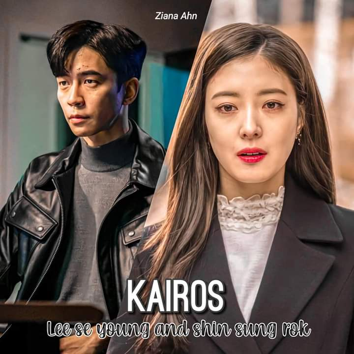

List of Upcoming Dramas
Snowdrop

Drama: Snowdrop (working & literal title)
Revised romanization: Seolganghwa
Hangul: 설강화
Director: Jo Hyun-Tak
Writer: Yoo Hyun-Mi
Network: JTBC
Language: Korean
Country: South Korea
Plot Synopsis by AsianWiki Staff © Set in 1987, when South Korea was governed by a dictatorial government. Graduate student Im Soo-Ho (Jung Hae-In) is covered in blood and he jumps into the female dormitory at Hosoo Women’s University. Eun Young-Cho (Kim Ji-Soo) finds him and helps to hide him. They develop a romantic relationship.
Im Soo-Ho is graduate student at a prestigious university. He is Korean-German. He has charisma and he is also mysterious.Eun Young-Cho is in the first grade of Hosoo Women’s University. She is a major in English literature. She first met Im Soo-Ho on a blind date and fell in love with him at first sight.
Kye Boon-Ok (Kim Hye-Yoon) gave up entering university due to her poor family background. She now works as a telephone operator at a women’s dormitory. Pretending to be a university student, she attends a blind date with Eun Young-Cho. Kye Boon-Ok later gets involved in a case. Lee Kang-Moo (Jang Seung-Jo) is the leader of team 1 at NSP (National Security Planning). He is a man of principle, who doesn't compromise in any situation.
City Couple's Way of Love

Drama: City Couple's Way of Love: My Lovely Camera Thief (literal title)
Revised romanization: Doshinamnyeoui Sarangbeob: Naui Sarangseureon Camera Dodook
Hangul: 도시남녀의 사랑법: 나의 사랑스런 카메라 도둑
Director: Park Shin-Woo
Writer: Jung Hyun-Jung, Jung Da-Yeon
Network: Kakao TV
Release Date: Second Half, 2020
Language: Korean
Country: South Korea
Plot Synopsis by AsianWiki Staff © Park Jae-Won (Ji Chang-Wook) is an architect with a passionate and honest personality. He enjoys the small streets in the city and collecting different things. He does not forget the woman who stole his heart and disappeared. Lee Eun-O (Kim Ji-Won) works as a freelancer marketer. She takes a trip without making specific plans. While on her trip, Lee Eun-O meets Park Jae-Won in a strange place. She introduces herself as Yoon Sun-A and pretends to have a free spirit, which is a totally different personality from her real self. She falls in love with him.
Mouth Jirisan

Drama: Jiri Mountain, Mounth Jirisan (literal title)
Revised romanization: Jirisan
Hangul: 지리산
Director: Lee Eung-Bok
Writer: Kim Eun-Hee
Network: tvN
Episodes: 16
Release Date: 2021
Runtime: Sat. & Sun. 21:00
Language: Korean
Country: South Korea
Plot Synopsis by AsianWiki Staff © Rangers work to save people at Jiri Mountain National Park. Seo Yi-Gang (Gianna Jun) is the best ranger at Jiri Mountain National Park. She knows virtually everything about the area, including where to climb the mountain. Kang Hyun-Jo (Ju Ji-Hoon) is a rookie ranger at Jiri Mountain National Park. He graduated from the military academy and was once an army captain. He has a secret that he can't tell anyone about. These two people become partners and they work to save people around Jiri Mountain National Park.
The Spy Who Loved Me

Drama: The Spies Who Loved Me (English title) / The Spy Who Loved Me (literal title)
Revised romanization: Nareul Saranghan Spy
Hangul: 나를 사랑한 스파이
Director: Lee Jae-Jin
Writer: Lee Ji-Min
Network: MBC
Episodes: 16
Release Date: October 21, 2020
Runtime: Wednesday & Thursday 21:30 (35 minutes each / 2 episodes per day)
Language: Korean
Country: South Korea
Plot Synopsis by AsianWiki Staff © Jeon Ji-Hoon (Eric) disguises himself as a travel writer, but he is actually a secret agent for Interpol. His job as a secret agent is way for Jeon Ji-Hoon to support himself financially. He is currently divorced. He was married to Kang A-Reum (Yoo In-Na), but they divorced without Kang A-Reum learning about his secret life as a spy.
Kang A-Reum now works as a wedding dress designer. She met Derek Hyun (Lim Ju-Hwan) after her divorce and they eventually married. Her current husband works as a diplomatic official and seems gentle and warm. His secret is that he is actually a cold-blooded industrial spy. Derek Hyun treats his wife sweetly, but, for his job as an industrial spy, he will do anything. He loves Kang A-Reum sincerely, but he also hides his true self from her. Secret agent Jeon Ji-Hoon appears in front of Kang A-Reum and Derek Hyun.
Vincenzo

Drama: Vincenzo
Revised romanization: Vincenzo
Hangul: 빈센조
Director: Kim Hee-Won
Writer: Park Jae-Bum
Network: tvN
Release Date: 2021
Language: Korean
Country: South Korea
Plot Synopsis by AsianWiki Staff © At the age of 8, Park Joo-Hyeong went to Italy after he was adopted. He is now an adult and has the name of Vincenzo Casano. He is a lawyer, who works for the Mafia as a consigliere. Because of a war between mafia groups, he flees to South Korea. In South Korea, he gets involved with Lawyer Hong Cha-Young. She is the type of attorney who will do anything to win a case. Vincenzo Casano falls in love with her. He also achieves social justice by his own way.
True Beauty

Drama: True Beauty
Revised romanization: Yeoshingangrim
Hangul: 여신강림
Director: Kim Sang-Hyub
Writer: Yaongyi (webcomic), Lee Si-Eun
Network: tvN
Release Date: DECEMBER 2, 2020
Language: Korean
Country: South Korea
Plot Synopsis by AsianWiki Staff © Im Joo-Kyeong is a high school student. Since she was little, she has had a complex about her appearance. To hide her bare face, Im Joo-Kyeong always wears make-up. Her excellent make-up skills makes her pretty and she hides her bare face in front others. She gets involved with 2 men; Lee Soo-Ho and Han Seo-Joon.
A love so beautiful

Native Title: 치아문단순적소미호
Also Known As: chiamundansunjeogsomiho , chiamundansunjeoksomiho , For us who are beautiful , To Our Pure Little Beauty , A Love So Beautiful Korean
Genres: Friendship, Comedy, Romance, School, Youth
Tags: Height Difference, Bright Female Lead, Female Chases Male First, Adapted From A Novel, Love Triangle, Modern Day, Slice Of Life, Smart Male Lead, High School, Cheerful Girl (Vote or add tags)
Country: South Korea
Type: Drama
Episodes: 24
Airs: Dec, 2020
Duration: 20 min.
Plot Synopsis by AsianWiki Staff © Kim Yo Han will play 17-year-old Cha Heon, a student at Chun Ji High School who has both good looks and brains. He appears to be a cold character, but he is actually someone with a warm heart who is awkward at expressing himself well. So Ju Yeon has been cast for the role of Shin Sol Yi, a bright and bubbly 17-year-old who has a crush on Cha Heon. She openly confesses her love to Cha Heon continuously, and she is a clumsy but lovable character. Yeo Hoe Hyun is confirmed to play Woo Dae Sung, a talented swimmer who transfers to Chun Ji High School and falls for Shin Sol Yi. He does not express his feelings for her and quietly stays by her side.
Sweet Home

Native Title: 스위트홈
Also Known As: Seuwiteu Hom
Director: Lee Eung Bok
Genres: Horror, Psychological, Supernatural
Type: Drama
Episodes: 10
Airs: 2021
Original Network: Netflix
Duration: 60 min.
Plot Synopsis by AsianWiki Staff © Hyunsoo, a loner high school student who lost his entire family in a terrible accident, moves to an old apartment complex called Green Home. Driven by despair, he gradually realizes the secret of the Green home. The fact that a monster trying to drive humanity out of various forms of distorted human desires surrounds the Green home, including himself, and that the residents of Green Homes are trapped in them.
Destruction

Native Title: 어느 날 우리 집 현관으로 멸망이 들어왔다
Also Known As: myeolmang , 멸망 , Destruction , One Day Destruction Came To Our Door , Ruin , eoneu nal uri jib hyeongwaeuro myeolmang deuleowassda
Screenwriter: Im Me Ah Ri
Director: Kwon Young Il
Genres: Drama
Tags: Fate, Supernatural (Vote or add tags)
Country: South Korea
Type: Drama
Episodes: 16
Airs: Apr, 2021
Original Network: tvN
Duration: 60 min.
Plot Synopsis by AsianWiki Staff © About a main character who has led a tumultuous life, subject to the whims of fate, until he finds himself on the precipice of true destruction. The main character is known as “Ruin,” or “Kim Sa Ram.” He was born between the dark and the light: when he breathes, countries disappear; where he walks, the seasons collapse; when he smiles, a life is extinguished. All he has to do is exist for something to fall into ruin. This is not his intention, but simply his fate. He forms a relationship with Tak Dong Gyung, who curses the whole world, and drags “Ruin” into her life with her fierce desire to live.
Love Alarm 2

Drama: Love Alarm Season 2
Revised romanization: Joahamyun Woolrineun Seuszen 2
Hangul: 좋아하면 울리는 시즌 2
Writer: Cheon Kye-Young (webcomic)
Network: Netflix
Release Date: 2020
Language: Korean
Country: South Korea
Plot Synopsis by AsianWiki Staff © Based on webcomic "Joahamyun Woolrineun” by Cheon Kye-Young (first published September 14, 2014 via Daum Webtoon Company). Related titles (drama series): Love Alarm | Joahamyun Woolrineun (Netflix / 2019) Love Alarm Season 2 | Joahamyun Woolrineun Seuszen 2 (Netflix / 2020)
The Sea of Silence

Drama: The Sea of Tranquility
Revised romanization: Goyoui Bada
Hangul: 고요의 바다
Director: Choi Hang-Yong
Writer: Park Eun-Kyo
Producer: Jung Woo-Sung
Network: Netflix
Episodes: 8
Release Date: 2020
Language: Korean
Country: South Korea
Plot Synopsis by AsianWiki Staff © Set in the future, when the planet suffers from a lack of water and food caused by desertification. Yoon-Jae is a soldier for the space agency. He is selected for a team, including Ji-An, to travel to the moon. Their mission is to retrieve a mysterious sample from an abandoned research station.
Kairos
Drama: Kairos
Revised romanization: Kairos
Hangul: 카이로스
Director: Park Seung-Woo
Writer: Lee Soo-Hyun
Network: MBC
Release Date: October 26, 2020
Runtime: Monday & Tuesday 21:30
Language: Korean
Country: South Korea
Plot Synopsis by AsianWiki Staff © Kim Seo-Jin (Shin Sung-Rok) is a man who is driven only to achieve success in his life. Thanks to his efforts, he is the youngest executive at his company. His life is perfect, with his beautiful violinist wife Kang Hyun-Chae (Nam Gyu-Ri) and a daughter. His wonderful life comes to a halt when his young daughter is kidnapped. He falls deep into despair. To change the past, when his daughter was kidnapped, he contacts Han Ae-Ri (Lee Se-Young) approximately one month in the past.
Han Ae-Ri has busy days with her studies and working a part-time job to make enough money to pay for her sick mother's operation. One day, her mother suddenly goes missing. Han Ae-Ri falls into despair, when Kim Seo-Jin from the future contacts her.
Sunbae Dont Put That Lipstick On

Drama: Senior, Don't Put on That Lipstick (literal title)
Revised romanization: Sunbae, Geu Lipstick Bareujimayo
Hangul: 선배, 그 립스틱 바르지 마요
Director: Lee Dong-Yoon
Writer: Chae Yoon
Network: JTBC
Release Date: First Half, 2021
\Language: Korean
Country: South Korea
Plot Synopsis by AsianWiki Staff © Yoon Song-A (Won Jin-A) works as a marketer for a cosmetic brand. She enjoys her job and does it with vigor. Her dream is to start her own cosmetic brand. Meanwhile, Chae Hyun-Seung (Ro Woon) works with Yoon Song-A as a marketer. He becomes attracted to Yoon Song-A and tries to develop a romantic relationship with her. However, Yoon Song-A rebuffs his advances, because she does not see younger guys as dating partners.